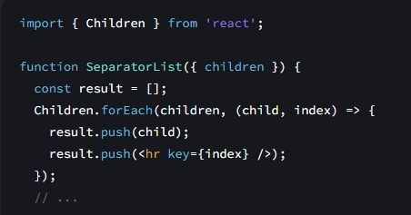
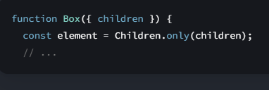
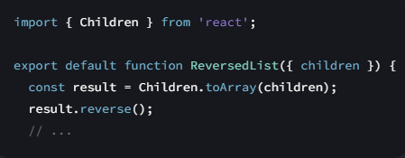

Children
Childrenpermite manipular e transformar o JSX que você recebeu como childrensuporte.
const mappedChildren = Children.map(children, child =>
< div className="Row">
{child}
);
Referência
Children.count(children)
Chame Children.count(children)para contar o número de filhos na childrenestrutura de dados.
import { Children } from 'react';
function RowList({ children }) {
return (
<>
Total rows: {Children.count(children)}
...
< />
);
}
Parâmetros
- children: O valor da children prop recebida pelo seu componente.
Devoluções
O número de nós dentro destes children.
Ressalvas
-
Nós vazios ( null, undefinede booleanos), strings, números e elementos React contam como nós individuais.
Matrizes não contam como nós individuais, mas seus filhos sim. A travessia não é mais profunda do que os
elementos React: eles não são renderizados e seus filhos não são percorridos. Fragmentos não são percorridos.
Children.forEach(children, fn, thisArg?)
Chame Children.forEach(children, fn, thisArg?)para executar algum código para cada filho na childrenestrutura de
dados.

Parametros
-
children: O valor da childrenprop recebida pelo seu componente.
-
fn: a função de mapeamento, semelhante ao retorno de chamada do método arraymap . Ele será chamado com o filho
como primeiro argumento e seu índice como segundo argumento. O índice começa 0e aumenta a cada chamada. Você
precisa retornar um nó React desta função. Pode ser um nó vazio ( null, undefinedou um booleano), uma string, um
número, um elemento React ou uma matriz de outros nós React.
-
opcional thisArg : o thisvalor com o qual a fnfunção deve ser chamada. Se omitido, é undefined.
Devoluções
Se childrenfor nullou undefined, retorna o mesmo valor.
Caso contrário, retorna uma matriz simples que consiste nos nós que você retornou da fn função. A matriz retornada
conterá todos os nós retornados, exceto null e undefined.
Ressalvas
-
Nós vazios ( null, undefinede booleanos), strings, números e elementos React contam como nós individuais.
Matrizes não contam como nós individuais, mas seus filhos sim. A travessia não é mais profunda do que os
elementos React: eles não são renderizados e seus filhos não são percorridos. Fragmentos não são percorridos.
-
Se você retornar um elemento ou uma matriz de elementos com chaves from fn, as chaves dos elementos retornados
serão automaticamente combinadas com a chave do item original correspondente from children. Quando você retorna
vários elementos de fnuma matriz, suas chaves só precisam ser exclusivas localmente entre si.
Children.only(children)
Chame Children.only(children)para afirmar que childrenrepresenta um único elemento React.

Parâmetros
-
children: O valor da childrenprop recebida pelo seu componente.
Devoluções
Se children for um elemento válido, retorna esse elemento.
Caso contrário, gera um erro.
Ressalvas
- Este método sempre é lançado se você passar um array (como o valor de retorno de Children.map) como children.
Em outras palavras, ele impõe que childrenseja um único elemento React, não que seja um array com um único
elemento.
Children.toArray(children)
Chame Children.toArray(children)para criar uma matriz fora da childrenestrutura de dados.

Parâmetros
-
children: O valor da childrenprop recebida pelo seu componente.
Devoluções
Retorna uma matriz simples de elementos em children.
Ressalvas
-
Nós vazios ( null, undefinede Booleanos) serão omitidos na matriz retornada. As chaves dos elementos retornados
serão calculadas a partir das chaves dos elementos originais e seu nível de aninhamento e posição. Isso garante
que o nivelamento da matriz não introduza mudanças no comportamento.
Uso